Every screen from the first-run design, in order. Open one and use the arrow keys, Enter, or Escape for "Not now"; the links follow the flow. Words are drawn in the kernel's own stroke font.
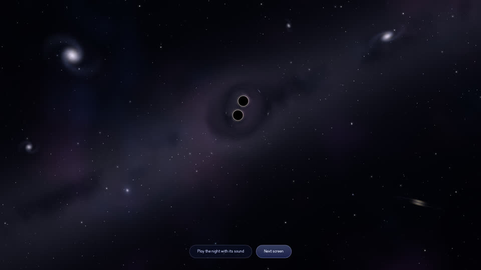
Screen 2: the night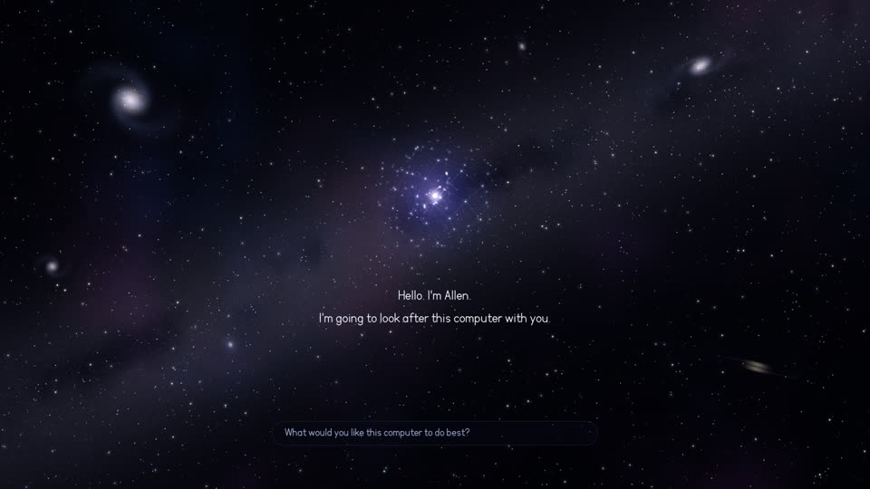
Screen 3: Allen arrives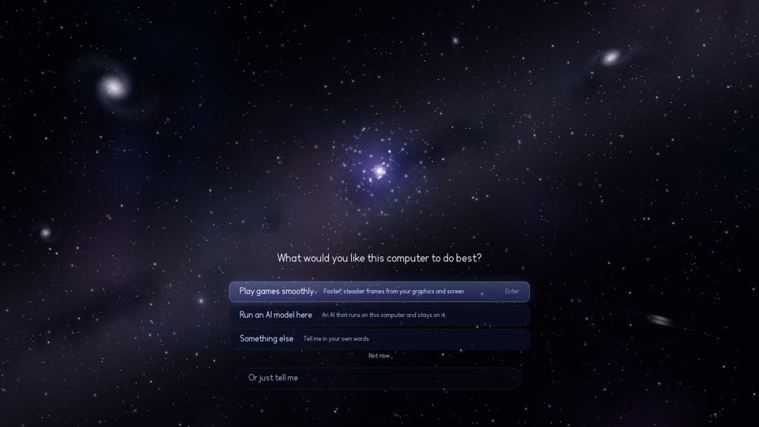
Screen 4: the one question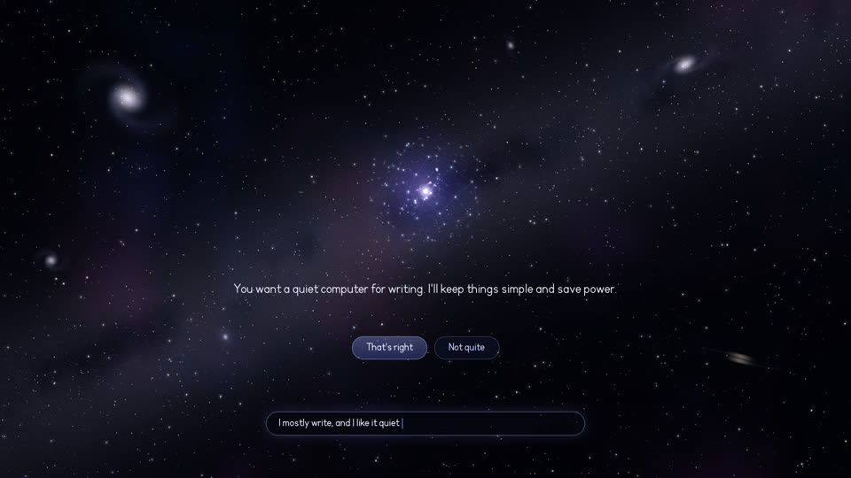
Screen 4: something else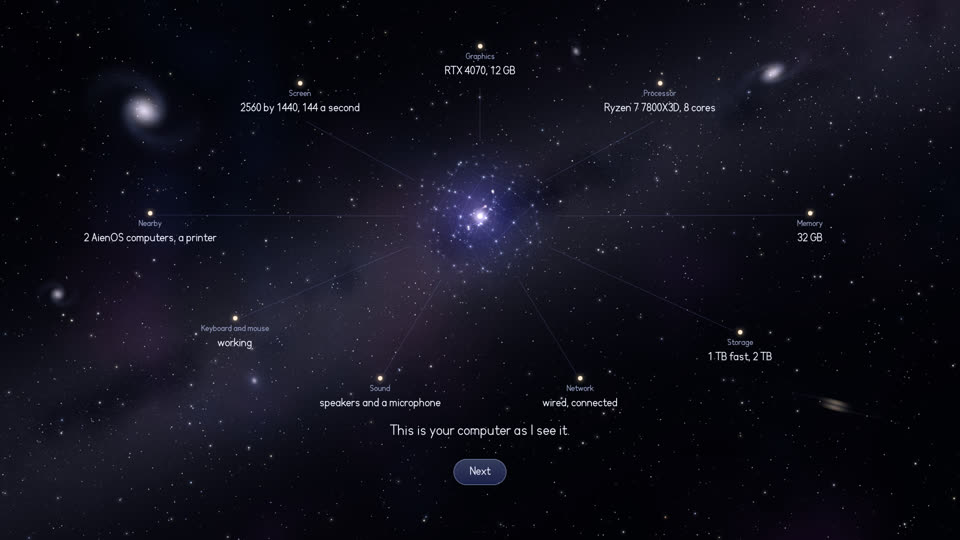
Screen 5: what Allen found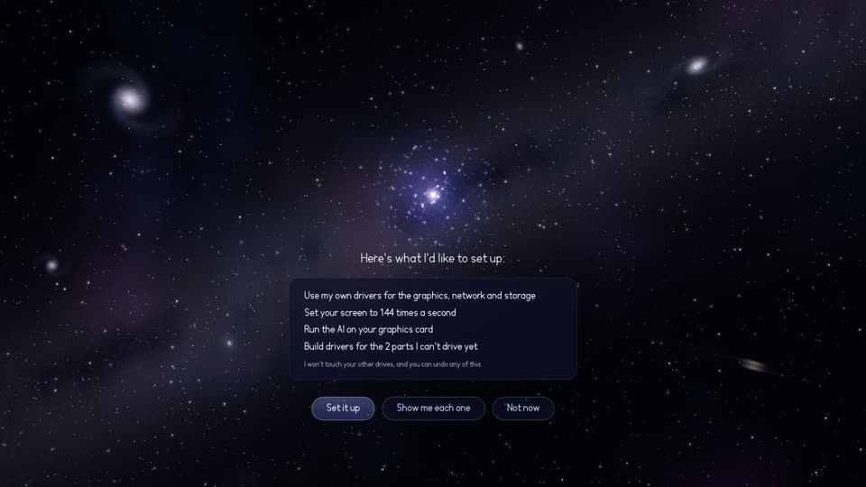
Screen 6: the one consent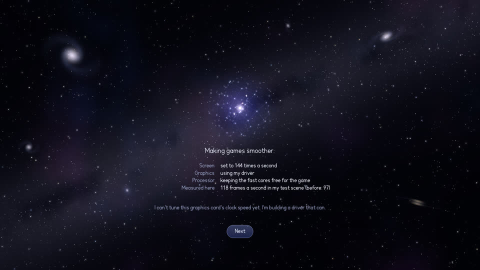
Screen 7a: making games smoother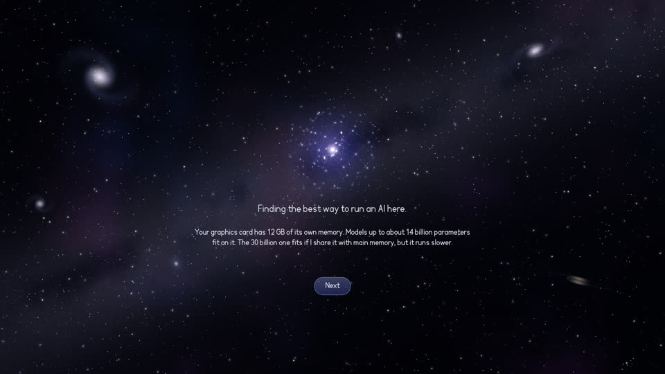
Screen 7b: finding the best way to run an AI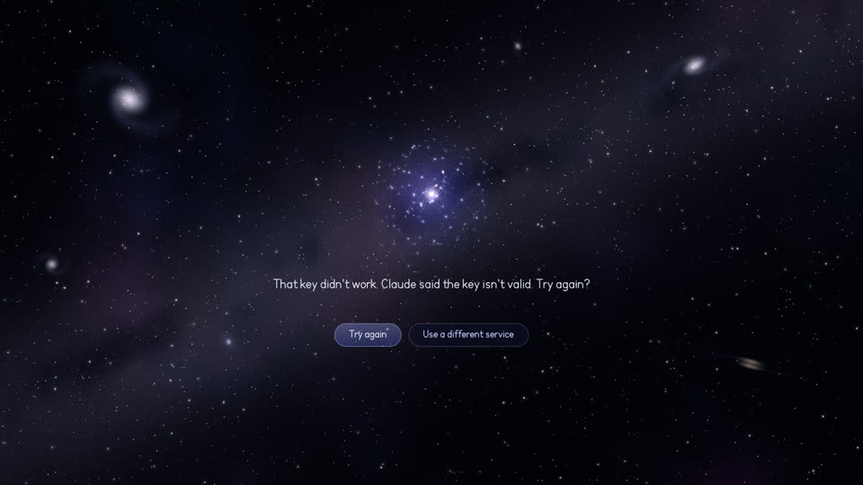
Screen 7c: the key did not work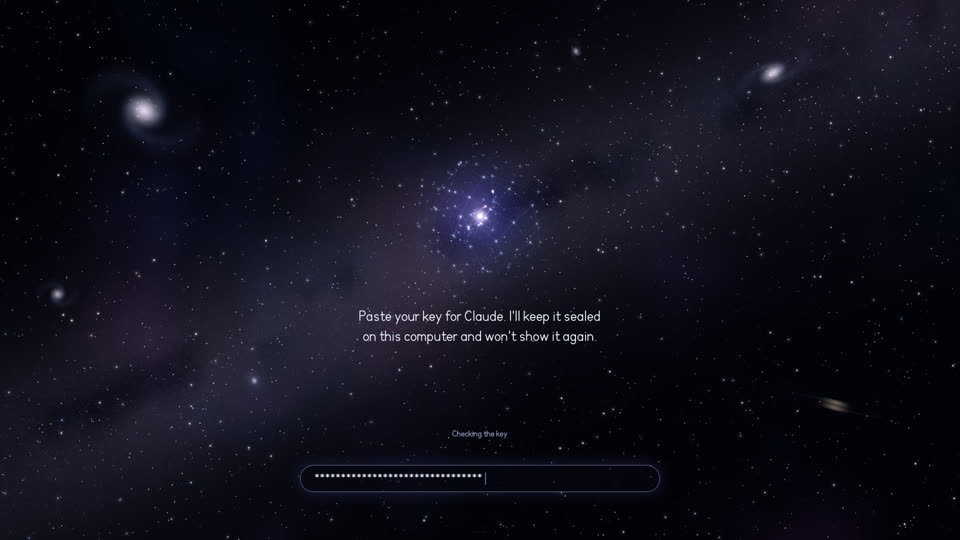
Screen 7c: paste a key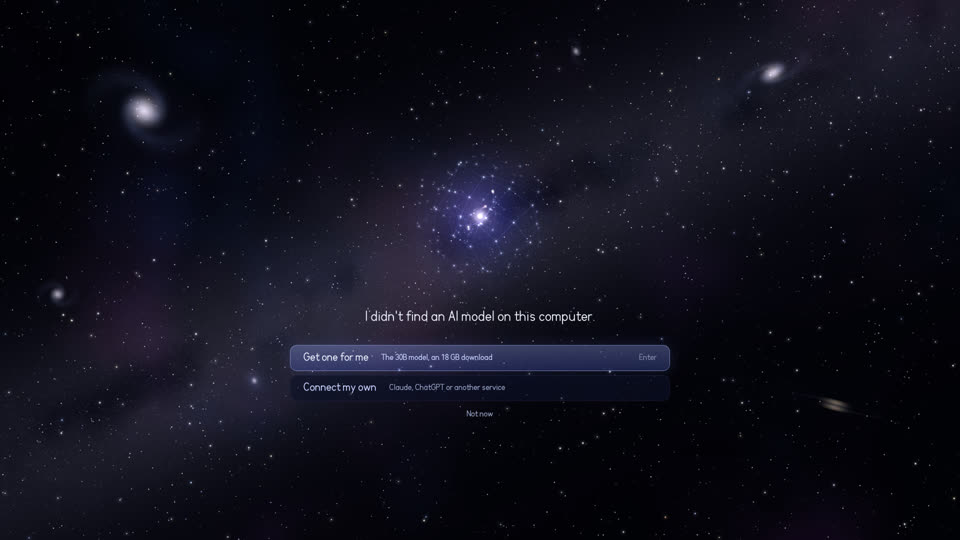
Screen 7c: none found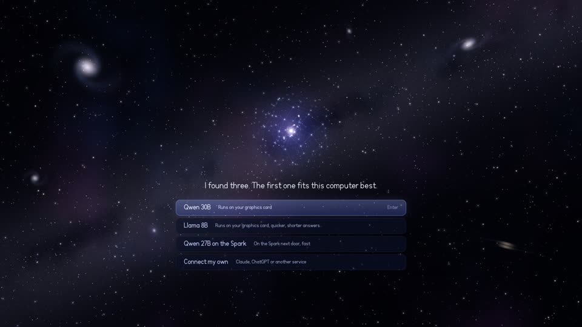
Screen 7c: several found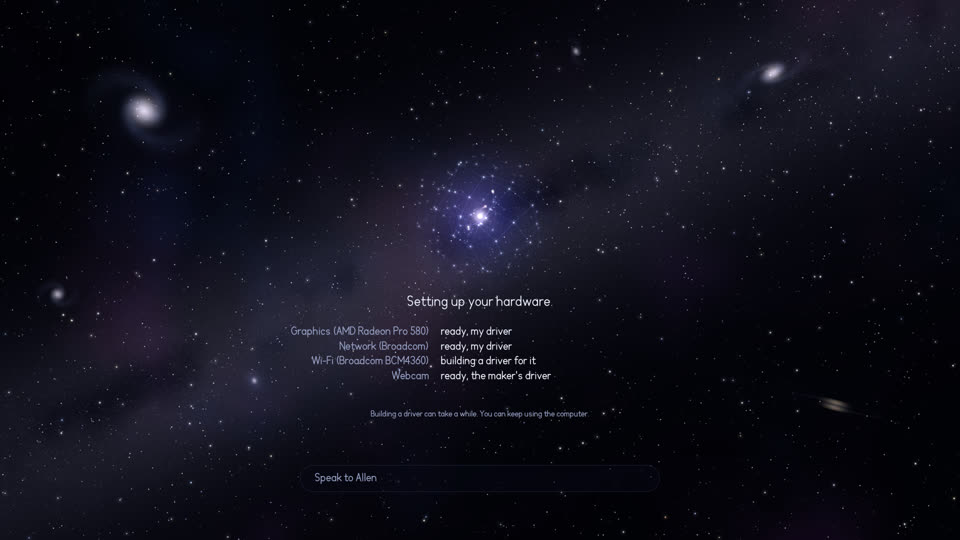
Screen 8: setting up your hardware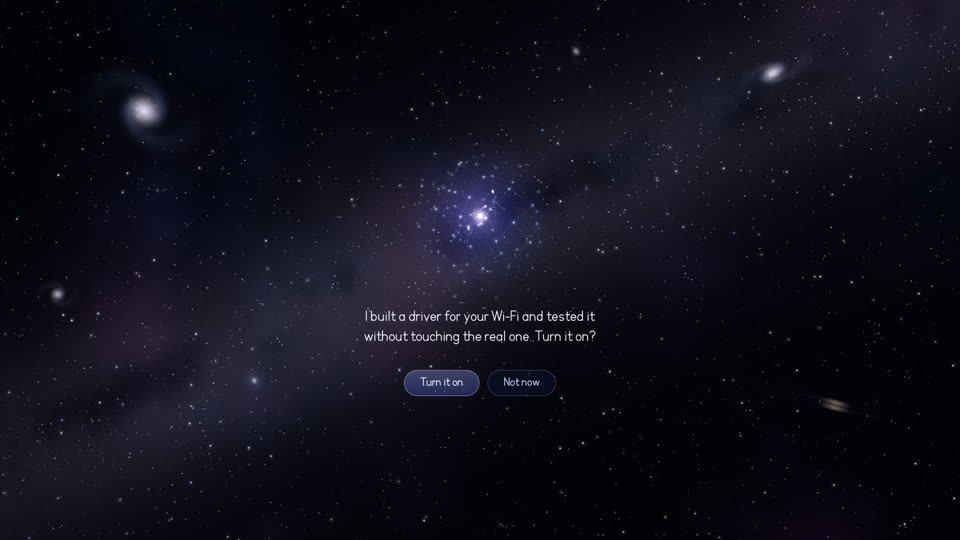
Screen 8: the second consent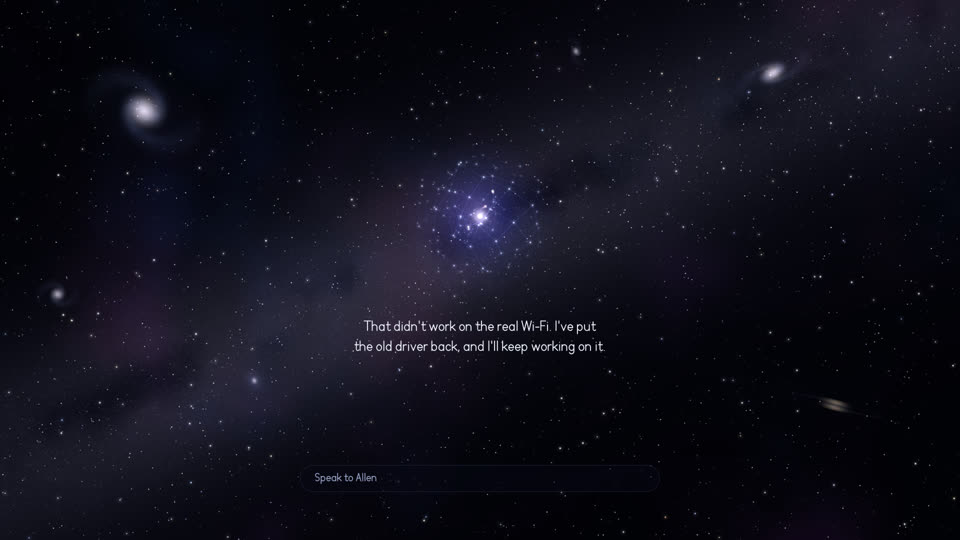
Screen 8: it failed, the old one is back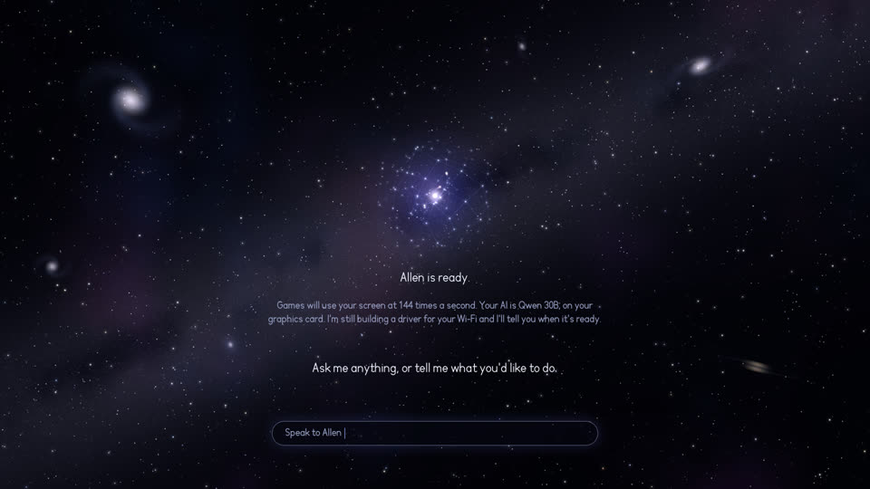
Screen 9: Allen is ready